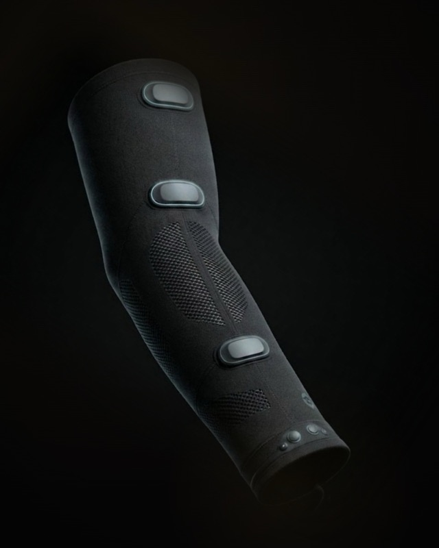
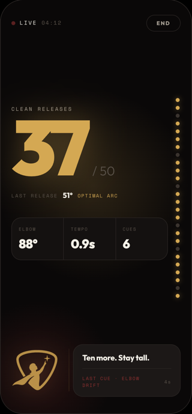
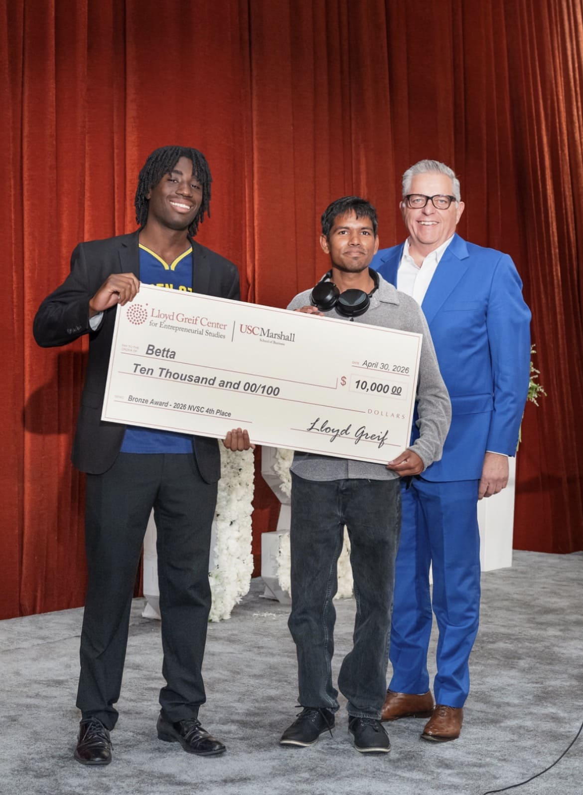

Featured Project
Betta
The shooting sleeve that learns the shot only you take, then helps you repeat it.
I'm building Betta, a haptic shooting sleeve for basketball. It reads every rep at the elbow and wrist, and when one drifts, a tap on the wrist says so.


Top 4 of 221
The project placed 4th of 221 teams at USC's 2026 New Venture Seed Competition and received a $10,000 award.
Hand-built
I built the prototype by hand, moving from a breadboard to soldered protoboard.
Working prototype
Everything runs end to end on the arm. Next comes moving the electronics into an actual sleeve.
